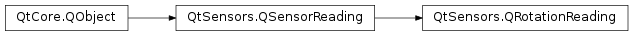
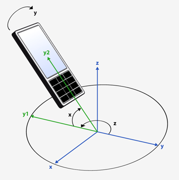
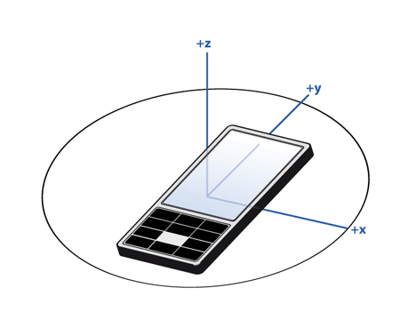
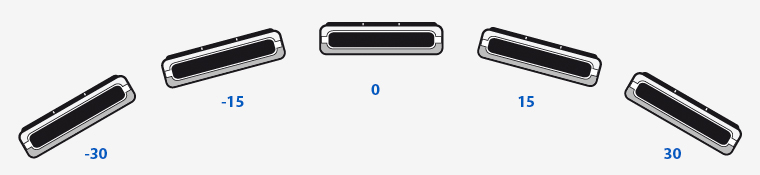

QRotationReading¶
Detailed Description¶
ThePySide2.QtSensors.QRotationReadingclass represents one reading from the rotation sensor.
QRotationReading Units¶
The rotation reading contains 3 angles, measured in degrees that define the orientation of the device in three-dimensional space. These angles are similar to yaw, pitch and roll but are defined using only right hand rotation with axes as defined by the right hand cartesian coordinate system.
The three angles are applied to the device in the following order.
- Right-handed rotation z (-180, 180]. Starting from the y-axis and incrementing in the counter-clockwise direction.
- Right-handed rotation x [-90, 90]. Starting from the new (once-rotated) y-axis and incrementing towards the z-axis.
- Right-handed rotation y (-180, 180]. Starting from the new (twice-rotated) z-axis and incrementing towards the x-axis.
Here is a visualization showing the order in which angles are applied.
The 0 point for the z angle is defined as a fixed, external entity and is device-specific. While magnetic North is typically used as this reference point it may not be. Do not attempt to compare values for the z angle between devices or even on the same device if it has moved a significant distance.
If the device cannot detect a fixed, external entity the z angle will always be 0 and the
QRotationSensor.hasZproperty will be set to false.The 0 point for the x and y angles are defined as when the x and y axes of the device are oriented towards the horizon. Here is an example of how the x value will change with device movement.

Here is an example of how the y value will change with device movement.
Note that when x is 90 or -90, values for z and y achieve rotation around the same axis (due to the order of operations). In this case the y rotation will be 0.
-
class
PySide2.QtSensors.QRotationReading(parent)¶ Parameters: parent – PySide2.QtCore.QObject
-
PySide2.QtSensors.QRotationReading.setFromEuler(x, y, z)¶ Parameters: - x –
PySide2.QtCore.qreal - y –
PySide2.QtCore.qreal - z –
PySide2.QtCore.qreal
Sets the rotation from three euler angles.
This is to be called from the backend.
The angles are measured in degrees. The order of the rotations matters, as first the
zrotation is applied, then thexrotation and finally theyrotation.- x –
-
PySide2.QtSensors.QRotationReading.x()¶ Return type: PySide2.QtCore.qreal
-
PySide2.QtSensors.QRotationReading.y()¶ Return type: PySide2.QtCore.qreal
-
PySide2.QtSensors.QRotationReading.z()¶ Return type: PySide2.QtCore.qreal
© 2018 The Qt Company Ltd. Documentation contributions included herein are the copyrights of their respective owners. The documentation provided herein is licensed under the terms of the GNU Free Documentation License version 1.3 as published by the Free Software Foundation. Qt and respective logos are trademarks of The Qt Company Ltd. in Finland and/or other countries worldwide. All other trademarks are property of their respective owners.